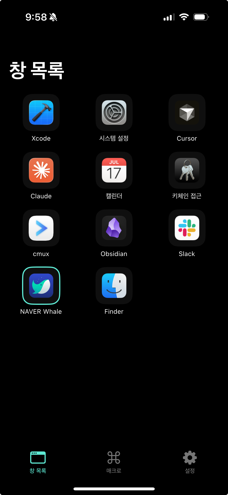

iPhone으로 열려 있는 Mac 창을 탭 한 번에 전환하고, 자주 쓰는 단축키를 버튼으로 실행하세요. 같은 Wi‑Fi만 있으면 됩니다 — 계정도, 클라우드도 없이.

iPhone 앱과 Mac 헬퍼는 한 쌍입니다. 같은 Wi‑Fi에 있는 iPhone과 Mac을 직접 연결합니다.
iPhone 앱이 동작하려면 반드시 Mac에 설치·실행되어 있어야 합니다.
DeskDeckHelper 다운로드This iPhone app requires the free DeskDeckHelper Mac app, downloadable above. The iPhone and Mac must be on the same Wi‑Fi network. Pair by scanning the QR code shown in the DeskDeckHelper menu‑bar item — no account or login is required.
DMG를 열고 DeskDeckHelper을 응용 프로그램으로 드래그합니다.
아이콘을 우클릭 → 열기. "확인되지 않은 개발자" 경고가 뜨면 한 번만 열기.
시스템 설정 → 개인정보 보호 및 보안에서 손쉬운 사용과 화면 기록을 체크.
메뉴바에서 QR을 띄우고, 폰으로 스캔. 회사 Wi‑Fi가 기기 간 통신을 막으면 IP 직접 입력도 됩니다.
Mac 메뉴바에 아이콘이 나타납니다.
메뉴바 아이콘을 눌러 페어링 QR을 띄웁니다.
DeskDeck에서 QR을 스캔하면 즉시 연결됩니다.
창 목록 탭에서 창 전환, 매크로 탭에서 단축키 실행.
열려 있는 Mac 창이 그대로 목록에 — 탭 한 번으로 원하는 창을 앞으로 가져옵니다.
⌘C·⌘V·스크린샷·화면잠금 같은 단축키를 큰 버튼으로. Hold 모드와 직접 추가도 지원합니다.
화면 캡처나 전송이 없습니다. 앱 아이콘만 표시되고, 모든 통신은 같은 Wi‑Fi 안에서만 흐릅니다.
계정 가입, 데이터 수집, 광고, 추적 모두 없습니다. 페어링 정보와 매크로는 기기 안에만 남습니다.
대부분의 연결 문제는 Wi‑Fi와 Mac 권한 두 가지에서 옵니다.
인터넷 공유로 핫스팟을 만들어 iPhone을 직접 연결하면 해결됩니다.DeskDeck는 어떤 개인정보도 수집하지 않습니다. App Store Connect의 개인정보 라벨은 Data Not Collected입니다.
DeskDeck(이하 "앱")는 사용자의 개인정보를 수집하지 않습니다.
DeskDeck ("the app") does not collect any personal data.